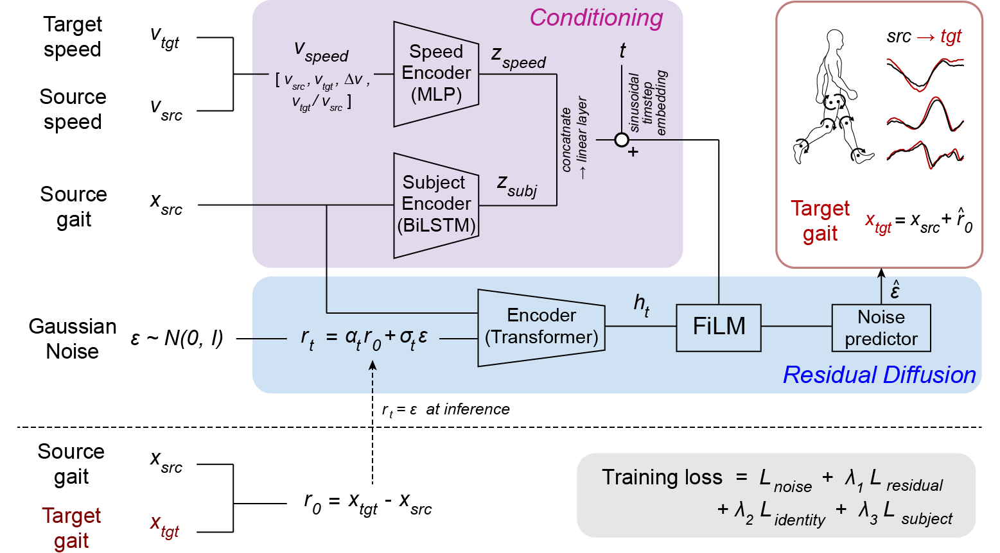

Subject-conditioned residual diffusion framework. Given a source gait trajectory at one walking speed and a desired target speed, the model predicts the residual change needed to synthesize the subject's gait at the target speed. Subject-specific gait features and speed information are used to condition the denoising process, allowing the generated trajectory to preserve individual motion characteristics.